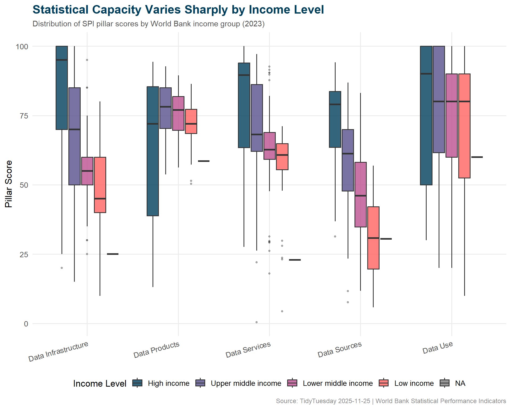
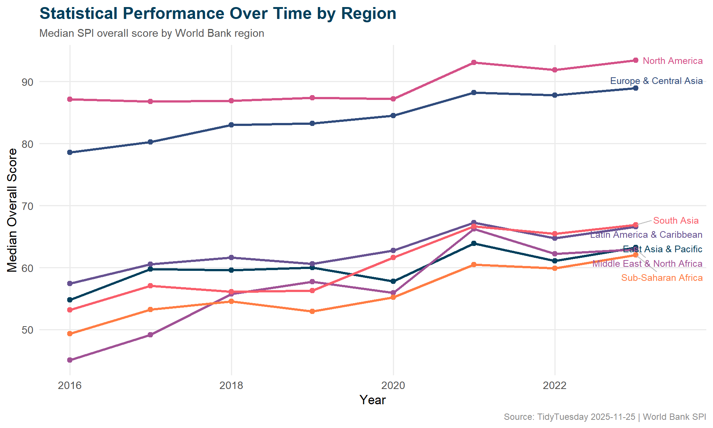

How well do countries manage their statistical systems? Exploring the World Bank’s SPI data to see which pillars lag, how income tracks with data quality, and which regions are improving fastest.
The World Bank’s Statistical Performance Indicators (SPI) monitors how well countries manage their statistical systems across five dimensions: data use, data services, data products, data sources, and data infrastructure. The dataset encompasses 99 percent of the world’s population, spanning 2016–2023 with some metrics extending back to 2004.
How has a country’s statistical performance evolved over time?
Does statistical performance correlate with income level or population size?
Which performance pillar shows the weakest scores across countries?
Loading necessary packages
My handy booster pack that allows me to install (if needed) and load my usual and favorite packages, as well as some helpful functions.
raw <- tidytuesdayR::tt_load('2025-11-25')spi <- raw$spi_indicators
Exploratory Data Analysis
The my_skim() function is a modified version of the skimr::skim() function that returns the number of missing data points (cells as NA) as well as the inverse (e.g.: number of rows that are notNA), the count, minimum, 25%, median, 75%, max, mean, geometric mean, and standard deviation. It also generates a little ASCII histogram. Neat!
Statistical Performance Indicators
spi %>%my_skim(.)
Data summary
Name
Piped data
Number of rows
4340
Number of columns
12
_______________________
Column type frequency:
character
4
numeric
8
________________________
Group variables
None
Variable type: character
skim_variable
n_missing
complete_rate
min
max
empty
n_unique
whitespace
iso3c
0
1
3
3
0
217
0
country
0
1
4
30
0
217
0
region
0
1
10
26
0
7
0
income
0
1
10
19
0
5
0
Variable type: numeric
skim_variable
n_missing
complete_rate
n
min
p25
med
p75
max
mean
geo_mean
sd
hist
year
0
1.00
4340
2004.00
2008.75
2013.50
2018.25
2.023000e+03
2013.50
2013.49
5.77
▇▇▇▇▇
population
0
1.00
4340
9791.00
744164.00
5940858.00
21675380.50
1.428628e+09
33381093.27
3804307.46
132147632.27
▇▁▁▁▁
overall_score
2915
0.33
4340
11.77
52.84
64.28
80.20
9.526000e+01
64.95
62.22
17.51
▁▃▇▆▇
data_use_score
0
1.00
4340
0.00
30.00
40.00
80.00
1.000000e+02
50.75
46.85
29.47
▇▇▆▃▆
data_services_score
2904
0.33
4340
0.33
56.18
64.00
86.47
1.000000e+02
64.78
57.22
23.47
▁▂▅▇▇
data_products_score
255
0.94
4340
4.89
45.51
58.02
68.43
9.431000e+01
55.21
50.43
18.68
▂▂▇▇▂
data_sources_score
2780
0.36
4340
0.00
36.88
52.82
68.63
9.417000e+01
51.89
47.00
20.06
▂▅▇▇▃
data_infrastructure_score
2821
0.35
4340
0.00
30.00
50.00
80.00
1.000000e+02
54.94
47.01
28.22
▃▇▆▃▆
spi %>%count(income, sort =TRUE)
# A tibble: 5 × 2
income n
<chr> <int>
1 High income 1700
2 Upper middle income 1080
3 Lower middle income 1020
4 Low income 520
5 Not classified 20
spi %>%count(region, sort =TRUE)
# A tibble: 7 × 2
region n
<chr> <int>
1 Europe & Central Asia 1160
2 Sub-Saharan Africa 960
3 Latin America & Caribbean 840
4 East Asia & Pacific 740
5 Middle East & North Africa 420
6 South Asia 160
7 North America 60
# A tibble: 14 × 3
# Groups: region [7]
region year median_score
<chr> <dbl> <dbl>
1 East Asia & Pacific 2016 54.8
2 East Asia & Pacific 2023 63.2
3 Europe & Central Asia 2016 78.6
4 Europe & Central Asia 2023 88.9
5 Latin America & Caribbean 2016 57.4
6 Latin America & Caribbean 2023 66.6
7 Middle East & North Africa 2016 45.1
8 Middle East & North Africa 2023 63.0
9 North America 2016 87.1
10 North America 2023 93.4
11 South Asia 2016 53.2
12 South Asia 2023 66.9
13 Sub-Saharan Africa 2016 49.3
14 Sub-Saharan Africa 2023 62.0
Visualizing Statistical Capacity
income_order <-c("High income", "Upper middle income", "Lower middle income", "Low income")pillar_by_income <- pillar_long %>%filter(!is.na(income)) %>%mutate(income =factor(income, levels = income_order))# World Bank institutional paletteincome_cols <-c("High income"="#003F5C","Upper middle income"="#58508D","Lower middle income"="#BC5090","Low income"="#FF6361")ggplot(pillar_by_income, aes(x = pillar, y = score, fill = income)) +geom_boxplot(alpha =0.8,outlier.size =1,outlier.alpha =0.4,width =0.7 ) +scale_fill_manual(values = income_cols, name ="Income Level") +labs(title ="Statistical Capacity Varies Sharply by Income Level",subtitle =paste0("Distribution of SPI pillar scores by World Bank income group (", latest_year, ")"),x =NULL,y ="Pillar Score",caption ="Source: TidyTuesday 2025-11-25 | World Bank Statistical Performance Indicators" ) +theme_minimal(base_size =13) +theme(plot.title =element_text(face ="bold", size =17, color ="#003F5C"),plot.subtitle =element_text(size =11, color ="#555555"),plot.caption =element_text(size =9, color ="#888888"),legend.position ="bottom",panel.grid.minor =element_blank(),axis.text.x =element_text(angle =15, hjust =1) ) +guides(fill =guide_legend(nrow =1))

ggplot(regional_trend, aes(x = year, y = median_score, color = region)) +geom_line(linewidth =1.1) +geom_point(size =2) +geom_text_repel(data = regional_trend %>%group_by(region) %>%slice_max(year, n =1),aes(label = region),nudge_x =0.5,size =3.3,direction ="y",segment.color ="#BBBBBB" ) +scale_x_continuous(breaks = scales::pretty_breaks()) +scale_color_manual(values =c("#003F5C", "#2F4B7C", "#665191", "#A05195","#D45087", "#F95D6A", "#FF7C43" ) ) +labs(title ="Statistical Performance Over Time by Region",subtitle ="Median SPI overall score by World Bank region",x ="Year",y ="Median Overall Score",caption ="Source: TidyTuesday 2025-11-25 | World Bank SPI" ) +theme_minimal(base_size =13) +theme(plot.title =element_text(face ="bold", size =17, color ="#003F5C"),plot.subtitle =element_text(size =11, color ="#555555"),plot.caption =element_text(size =9, color ="#888888"),legend.position ="none",panel.grid.minor =element_blank() )

Final thoughts and takeaways
Statistical infrastructure is invisible until it breaks. Countries that can’t count their people, track their diseases, or measure their economies are flying blind — and this dataset makes that gap visible.
The income-pillar relationship is stark but not surprising: wealthy nations invest more in statistical systems, which in turn support better policy decisions, which support further economic development. The virtuous cycle is clear in the data. What’s more interesting is which pillars lag most for low-income countries — data infrastructure and data sources tend to be the weakest links, suggesting that the fundamental building blocks (surveys, registries, administrative data systems) are where investment is most needed.
Note
The World Bank explicitly warns that “small differences between countries should not be highlighted since they can reflect imprecision.” This is a ranking-resistant dataset — better suited for understanding broad patterns and structural gaps than declaring winners and losers.